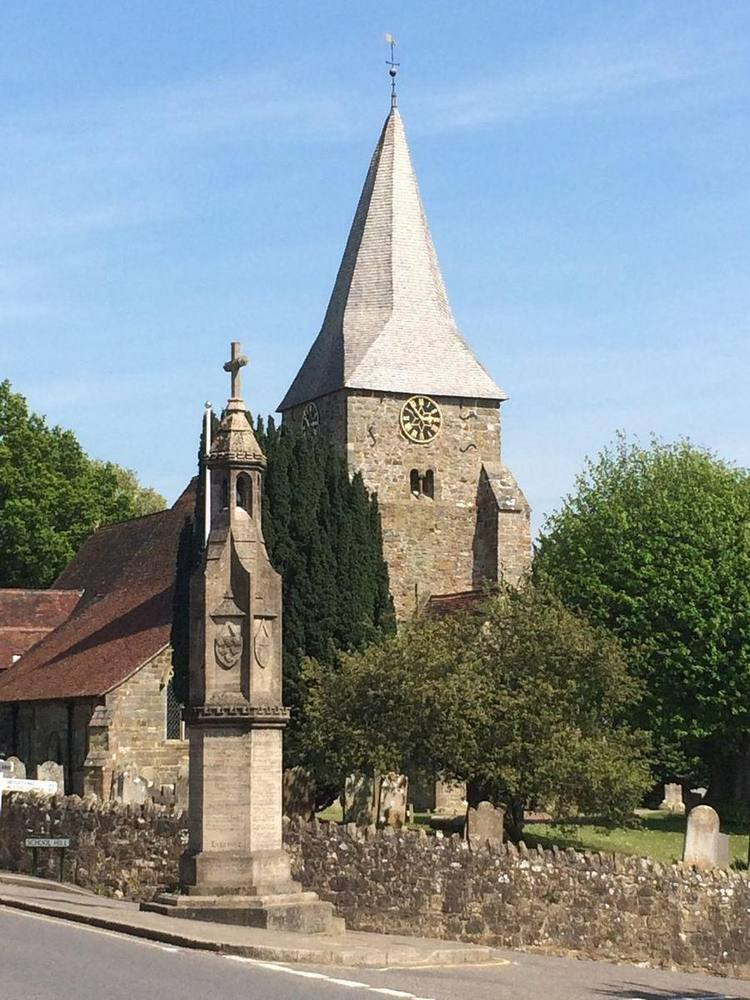
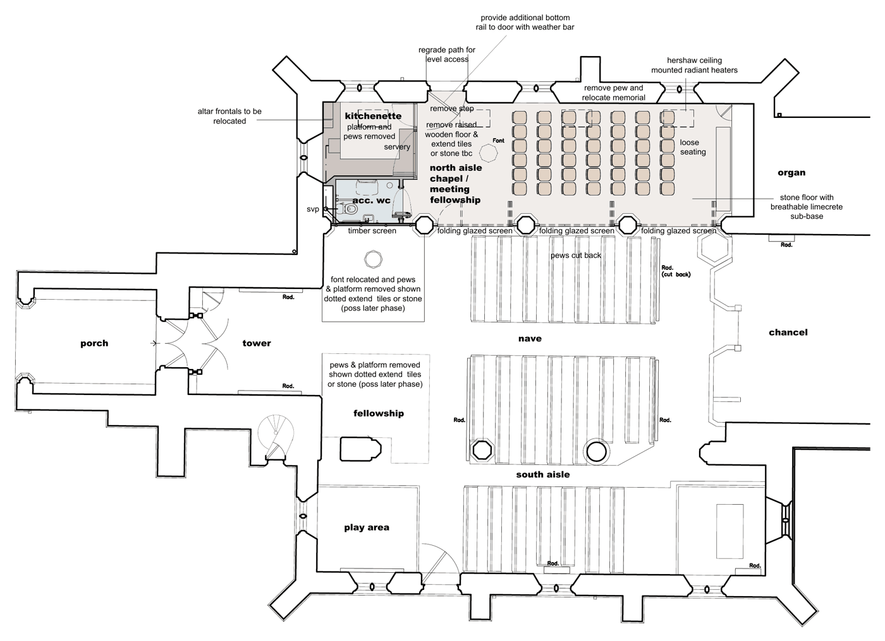
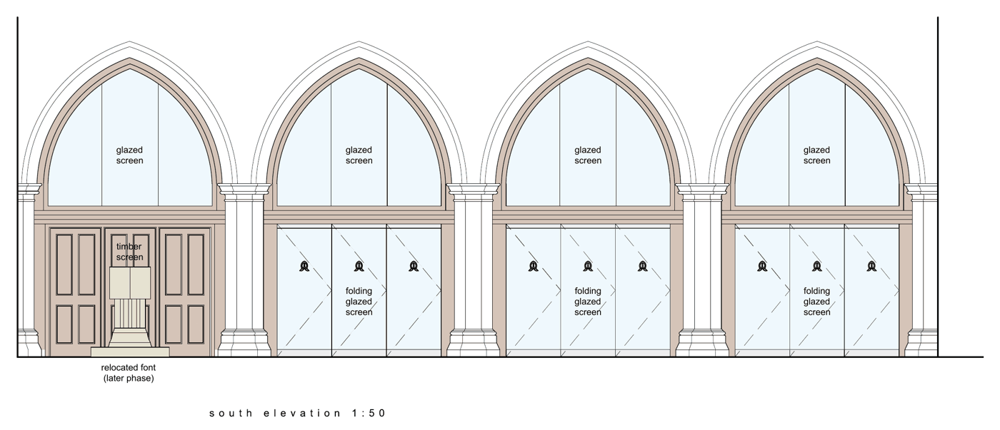

St Bartholomew's, Burwash
Access and Amenities Project
Making St Bartholomew's warm, welcoming and usable for everyone, all week long.
Why we need it
St Bartholomew's has been at the heart of Burwash for over 900 years. Today it's used for far more than Sunday worship: Wednesday Club, 3Cs, the school's services and lessons, the Christmas Tree Festival, concerts, weddings and funerals.
But the building is holding us back. There's no toilet, and the nearest public one is a 10-minute round trip. The only "kitchen" is a cramped sink and two kettles. The north door, our level entrance, has a raised threshold. And there's nowhere warm and quiet for a meeting, a children's group or a pastoral conversation while something else is going on in church.

What we're planning
An accessible toilet
At the west end of the north aisle, so no one has to leave church to find one.
A servery and kitchenette
Not a full kitchen, but a safe, hygienic place to make drinks and serve food for weddings, funerals, school and community events.
Level floors and step-free access
A new floor in the north aisle, removing the old pew platforms that people trip on and the sealed 1990 floor that's harming the building. The north door will become a fully level entrance, and the font will move to the west end, near the main door.
New heating
Our boiler is near the end of its life. We're planning a more efficient, lower-carbon system, with the north aisle heated on its own so small groups don't need the whole church heated.
A glass screen to the north aisle
Discreet, reversible glazing between the arches will create a warm room for groups, meetings and quiet prayer. The lower panels fold open, so the space becomes part of the church again for big services and events.
The plans




Architect's sketch scheme (John D Clarke Architects, 2023). The details may change as the design develops. Click a drawing to see it full size.
Caring for a historic church
St Bartholomew's is Grade II* listed, and we've designed the work with that in mind. The changes are concentrated in the north aisle, which was already rebuilt in the 1850s and 1990s. The glazing will be fixed only into mortar joints, so it can be removed without harm; the monuments will stay where they are, and new floors will be in stone or tile to suit the church.
Where we've got to
- Consultation
- We've consulted the congregation and village, the Diocesan Advisory Committee, the Church Buildings Council, Historic England and the amenity societies, and have been working with them for the last 18 months.
- Next step
- We hope to apply for a faculty (the Church of England's permission for work on a church) in 2027.
- Phases
- 1. Toilet, kitchenette, floors and access. 2. Heating. 3. North aisle glazing.
How you can help
Every gift to St Bartholomew's helps us look after the building and plan for its future. If you'd like to know more, or can offer skills or time, please get in touch.
Give now Get in touch